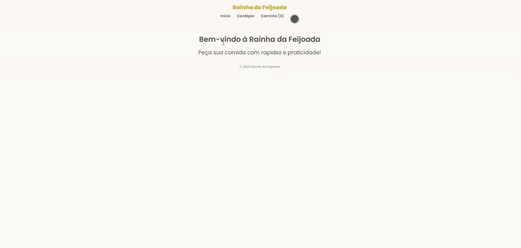
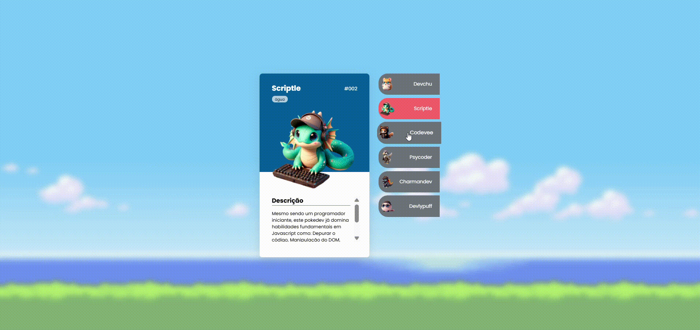

Sou Aline Seravali (Dev Seravali), profissional Full
Stack com mais de 1 ano de
experiência no desenvolvimento de soluções digitais e sistemas completos. Atuo do front-end ao back-end, com
foco em
código organizado, projetos práticos e evolução contínua. Tenho uma base sólida em desenvolvimento web e
busco sempre
aplicar boas práticas, pensando em escalabilidade, manutenção e qualidade do software.
Além do desenvolvimento técnico, compartilho minha jornada de aprendizado no YouTube,
onde documento projetos, estudos e
o processo real de crescimento na área de tecnologia. Acredito que aprender construindo e compartilhar
conhecimento de
forma transparente fortalece não só meu próprio aprendizado, mas também o de outras pessoas que estão
iniciando ou
evoluindo na área.
Skills
Mapa de Habilidades
Front End
Back End
Banco de Dados & ORM
Testes
Ferramentas & Ambiente
Inteligência Artificial Aplicada
Conteúdo & Comunidade
No canal Dev Seravali, compartilho
minha jornada como Desenvolvedora Full Stack por meio da
prática contínua e do desenvolvimento de projetos reais. Os vídeos mostram o processo de construção de
aplicações, estudos técnicos, organização de código e decisões de arquitetura ao longo do aprendizado.
Além dos projetos, o canal também traz comentários sobre notícias e tendências do
mercado de tecnologia,
sempre conectando essas atualizações com a realidade do desenvolvimento e da carreira em tecnologia. A
proposta é apresentar conteúdo técnico acessível, focado em evolução, consistência e aprendizado prático.
O canal funciona como um registro da minha evolução profissional, além de um
espaço para compartilhar
aprendizados, práticas e experiências com pessoas que também estão em processo de desenvolvimento na área de
tecnologia.

Interface do sistema de delivery Rainha da Feijoada em funcionamento
Rainha da Feijoada - Sistema Delivery
Sistema de delivery com fluxo completo de pedidos, do carrinho ao
acompanhamento do status, desenvolvido
com JavaScript
puro.
Stack
HTML
CSS
JavaScript
Funcionalidades
Fluxo completo de pedido (cliente, carrinho e acompanhamento)
Carrinho dinâmico com cálculo automático de valores
Persistência de dados utilizando localStorage
Manipulação de DOM e lógica de estados da aplicação
Interface responsiva e orientada à experiência do usuário
Principais Desafios
Modelar um fluxo real de pedidos sem uso de frameworks
Gerenciar estado do carrinho e do pedido apenas com JavaScript
Garantir persistência de dados entre páginas utilizando
localStorage
Desenvolver uma interface responsiva e orientada à experiência do
usuário
Aprendizados
Estruturação de lógica de aplicação em projetos Front-End
Manipulação avançada de DOM e estados da interface
Uso prático de localStorage para persistência de dados
Organização de código e separação de responsabilidades
Demonstração da API MovieFlix: catálogo de filmes, filtros e documentação Swagger
MovieFlix API
API REST de catálogo de filmes com CRUD completo, filtros por gênero e
documentação via Swagger.
Stack
Node.js
TypeScript
Express.js
PostgreSQL
Prisma ORM
Swagger
OpenAPI
Funcionalidades
Gerenciamento completo de um catálogo de filmes (criação,
consulta, atualização e
exclusão)
Filtro de filmes por gênero para facilitar buscas específicas
Organização de rotas seguindo o padrão REST
Documentação interativa para facilitar o consumo e testes da API
Persistência de dados em banco relacional
Principais Desafios
Estruturar uma API REST consistente utilizando TypeScript
Planejar corretamente o modelo de dados relacional
Integrar o ORM ao banco de dados mantendo tipagem e segurança
Organizar rotas e regras de negócio de forma clara e escalável
Criar documentação técnica compreensível e funcional
Aprendizados
Desenvolvimento prático de APIs REST completas
Uso de TypeScript no backend para maior segurança e organização
Integração entre aplicação e banco de dados relacional
Criação e manutenção de documentação técnica com Swagger
Importância da separação de responsabilidades em projetos Back-End
Aplicação front-end que consome a PokéAPI para listar e exibir informações de Pokémon.
Pokédex
Aplicação front-end que consome uma API externa para listar e exibir
informações de Pokémon, com foco em
interface moderna, organização de componentes e experiência do usuário.
Stack
HTML
CSS
JavaScript
PokéAPI
Funcionalidades
Consumo de API externa para obtenção dos dados dos Pokémon
Listagem de Pokémon com informações detalhadas
Interface responsiva e organizada
Interação dinâmica com a interface
Organização visual clara para facilitar a navegação
Principais Desafios
Consumir e tratar dados de uma API externa de forma eficiente
Organizar a exibição das informações de maneira clara e intuitiva
Manter a interface responsiva em diferentes tamanhos de tela
Estruturar o código para facilitar manutenção e evolução
Aprendizados
Estruturar o código para facilitar manutenção e evolução
Manipulação de dados assíncronos
Organização de componentes e lógica de interface
Melhoria na estruturação de projetos Front-End

Interface interativa e responsiva do projeto PokéDevs, com cartões informativos dinâmicos.
PokéDevs
Aplicação web interativa e responsiva inspirada no universo Pokémon, com
uma
lista de “PokéDevs”
(personagens fictícios) e alternância entre cartões informativos.
Stack
HTML
CSS
JavaScript
Google Fonts (Poppins)
Markdown (documentação do projeto)
Funcionalidades
Lista de personagens “PokéDevs” com cartões informativos
Alternância/seleção entre perfis para visualizar informações de cada
personagem
Interface interativa com comportamento dinâmico (cliques e estados
visuais)
Principais Desafios
Implementar a alternância entre cartões com JavaScript (eventos e
controle de estados)
Garantir responsividade e boa experiência em diferentes tamanhos de
tela
Organizar bem a separação de responsabilidades entre HTML, CSS e
JavaScript
Trabalhar estilização e animações/transições mantendo consistência
visual
Aprendizados
Manipulação de classes e eventos com JavaScript
Estilização com Flexbox e uso de transições
Práticas de acessibilidade e responsividade
Separação de responsabilidades (HTML x CSS x JS)
Interface interativa do Anime Radar com filtros e organização por categorias.
Anime Radar
Aplicação front-end interativa para listagem e visualização de animes, com
filtros personalizados,
organização por categorias e foco em experiência do usuário.
Stack
HTML
CSS
JavaScript
Manipulação de DOM
Estilização com foco em responsividade e temas
Funcionalidades
Listagem de animes com informações organizadas
Filtros por categorias e critérios definidos
Interface dinâmica e responsiva
Organização visual para facilitar a navegação e descoberta de conteúdo
Principais Desafios
Implementar filtros dinâmicos utilizando apenas JavaScript
Gerenciar estado da interface (filtros e tema)
Manter organização do código em uma aplicação interativa
Garantir boa experiência do usuário em diferentes dispositivos
Aprendizados
Criação de interfaces interativas com JavaScript puro
Implementação de filtros e controle de estado no front-end
Organização de lógica e dados em aplicações Front-End
Melhoria na experiência do usuário por meio de temas e interação
Práticas de acessibilidade e responsividade
Contato
Estou aberta a novas oportunidades e conexões na área de desenvolvimento Full
Stack. Se você deseja
colaborar, discutir projetos ou simplesmente trocar ideias sobre tecnologia, sinta-se à vontade para entrar
em contato comigo!